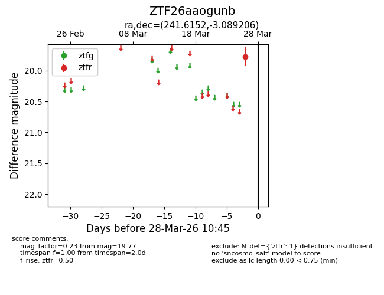
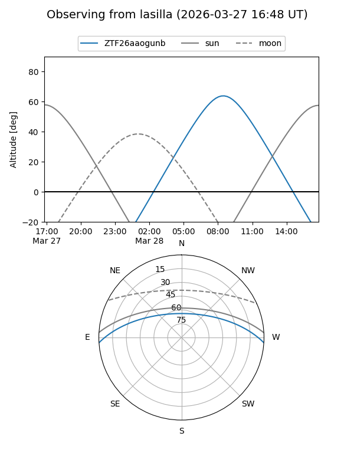
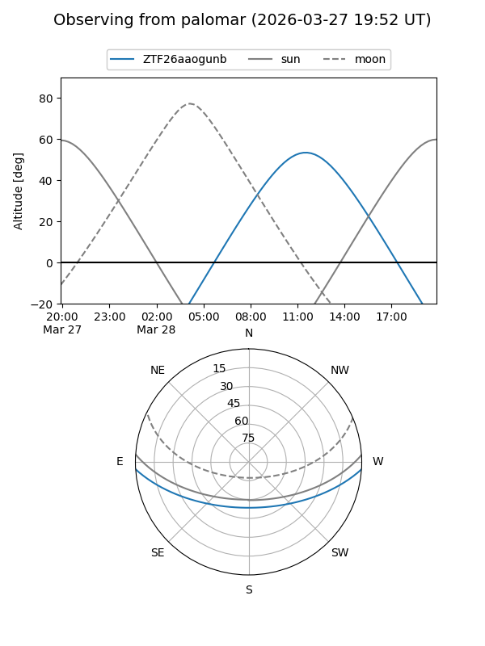

ZTF26aaogunb
Target ZTF26aaogunb at 2026-03-28 10:48
Aliases and brokers:
FINK: link
Lasair: link
ALeRCE: link
alt names
ZTF26aaogunb (ztf,fink_ztf)
Coordinates:
equatorial (ra, dec) = 241.6152,-3.08921
equatorial (HMS+DMS) = 16:06:27.65,-03:05:21.14
galactic (l, b) = (8.0554,+34.14693)
Flags:
Photometry:
last ztfr=19.77
1 ztfr detections
Lightcurve

Visibility


Additional plots